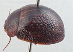
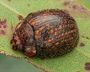
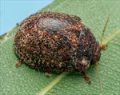
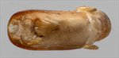
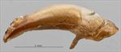
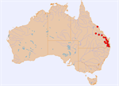

Click on images to enlarge

Male, Boonah, S.E. Queensland

Male, Moore, S.E. Queensland

Male, Aratula, S.E. Queensland

Aedeagus, dorsal view (Kooralbyn, S.E. Queensland)

Aedeagus, lateral view (Kooralbyn, S.E. Queensland)

Distribution
Ta40
Name
Trachymela sp. Ta40
Reference specimen
1999-0274, Kooralbyn, SE Queensland.
Adult Description
Length: ♂ 8.2–9.3 mm (n=11), ♀ (7.6)8.3–9.9 mm (n=21).
Colouration:
Head: reddish-brown or dark-brown, area around antennal insertions often slightly darker, mandibles black-tipped; antennomeres 1–11 uniformly straw- to light-brown
Pronotum: brown, concolorous with head, with lateral margins of discal area broadly dark-brown, sometimes almost black, sometimes the dark area is very broad or (rarely) conjoint so that disc is almost entirely darker than lateral marginal areas
Scutellum: brown or black, fractionally darker than adjacent area of pronotum, usually broadly bordered in darker shade
Elytra: brown, concolorous with or a slightly darker shade than pronotum, with a large number of discrete moderate-sized (3–6× pd) and approximately round verrucae of a lighter-brown colour, arranged in about 9 longitudinal series on disc, some of these series run almost continuously from anterior margin to apex, while others consist of just a few verrucae; humeral callus concolorous with discal interstices
Venter & Legs: mid- to dark brown, generally darker around mid-ventrites, legs fractionally lighter in shade, elytral epipleura brown or black with brown margin
Cuticular Wax: light-brown or greyish in colour, distributed quite unevenly (rarely more evenly) over dorsal surface with higher concentrations usually present in foveal area of pronotum and in a few irregular patches in lateral and posterior regions of elytra, verrucae generally wax-free
Morphology:
Head: body shape evenly rounded and almost hemispherical; punctures variable, usually quite large (pd ≈ 2× ef) and relatively evenly and quite densely distributed, rarely partially obliterated by rugose interstices; antennae moderately long (AL/BL: ♂ 41–45%, ♀ 38–40%), filiform
Pronotum: almost evenly curved transversely, with a broad but very shallow depression situated behind outside edge of each eye; puncturation on disc usually clearly impressed, variable in size with punctures along anterior margin similar in size to head, but those in centre of disc considerably finer, slightly unevenly distributed and moderately dense in discal area, becoming much coarser at lateral margins; much finer punctures scattered very unevenly among larger ones; front margins join lateral margins in a smoothly rounded right-angle, with lateral margin curving smoothly and gradually towards rear margin
Scutellum: lightly and finely punctured over anterior half, unpunctured or less so in posterior half
Elytra: surface evenly curved, punctures distinct anteriorly, becoming less so in posterior third, and relatively evenly distributed between verrucae; about 9 longitudinal rows of raised, roughly round verrucae, most with a central puncture, present on disc; surface continuous under humeral callus; vertical extension of epipleura considerable (HCE/PW = 0.36–0.40)
Venter: prosternal process almost parallel-sided, open or lightly closed anteriorly, short setae usually present at rear of prosternal process and scattered over its length, present also (rarely absent) on mesoventrite; one long seta on anterior, median (sometimes 2), and posterior trochanter; front edge of metaventrite beveled, truncate
Male Genitalia (Aedeagus):
Dimensions: small (LPE/BL = 26–27%)
Dorsal view: shaft almost parallel-sided for most of length, then broadening noticeably near apex before sides converge towards apex in a smooth arc, dorsal surface smoothly curved with dorso-median channel usually absent, tip barely protruding, ostium large and approximately round
Lateral view: shaft quite thick, almost evenly curved throughout its length, thinning towards apex over 20% of length, tip slightly reflexed, thin and spout-like, flagellum thin and usually broken off in specimens.
Immature Stages
Eggs: Green to pale-green, 2.06 × 0.84 mm in size, with a surface that appears regularly pitted. The pitting seems to be on two scales, with quite coarse depressions containing much smaller punctures. Batch size is 3–11. Batches consist of eggs laid in rows, side-by-side. A batch of 11 consisted of 2 such rows, similar to batches laid by many Paropsisterna species.
Larvae: Unknown.
Similar species
Ta39: A very similar species that also occurs on Corymbia and its distribution overlaps that of Ta40 across a large area. It is slightly larger, its verrucae are larger than those of Ta40, and its cuticular wax is distributed differently; on the elytra it is mostly concentrated along the edges of the verrucae and in the lateral marginal area.
Notes
Distribution & Abundance: Ta40 has been collected in southern to central Queensland (north to about Proserpine), extending for a short distance into NE New South Wales.
Host Associations: Recorded almost exclusively from the closely related ghost gum species Blakella tessellaris and B. dallachiana (25 of 29 records). Other host records are from an unidentified Corymbia sp. (n=1), Angophora costata (n=1), Eucalyptus crebra (n=1), and an unidentified ironbark (n=1), all from locations where B. tessellaris is also present.
Population Structure: The sex ratio is strongly female-biased, with 67% of 33 specimens examined being female (p = 0.08 using an exact binomial test).
Copyright © 2026. All rights reserved.
{kind=link}
{kind=link}
{kind=link}
{kind=link}
{kind=link}
{kind=link}